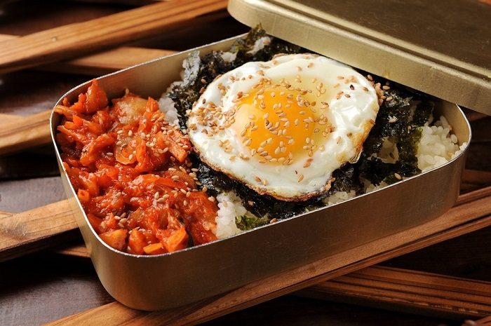
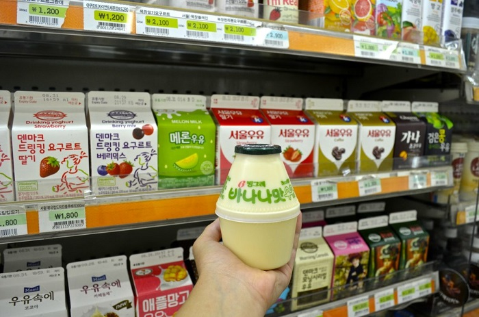

Du lịch Hàn Quốc
Welcome to Korea
Welcome to Korea
Samgak Gimbap (cơm nắm tam giác) là món ngon ở cửa hàng tiện lợi Hàn Quốc không thể bỏ lỡ. Cơm được nấu dẻo, có nhân bên trong. Bọc bên ngoài cơm là một loại rong biển và được tạo thành khối tam giác nhỏ xinh. Món ăn hấp dẫn này có mặt ở tất cả các cửa hàng, được nhiều người Hàn ưa chuộng. Có đa dạng các loại nhân cho bạn lựa chọn, chẳng hạn như cá ngừ, xúc xích, rau củ, kim chi…
Nếu như cơm hộp bento tượng trưng cho đất nước Nhật Bản thì Dosirak cũng được mệnh danh là “cơm hộp quốc dân” tại xứ kim chi. Đây là món ăn xuất hiện liên tục trên các kênh truyền hình, bộ phim “đình đám” làng điện ảnh. Cho dù bạn bận rộn thế nào, chuyến đi của bạn có hạn hẹp đến đâu thì cũng hãy ghé vào một cửa hàng tiện lợi ăn thử hộp cơm Dosirak nhé. Bên trong hộp cơm có vô số món ngon được làm từ nguyên liệu đơn giản của Hàn Quốc khiến bạn chỉ nhìn thôi cũng đã mê.
Cách thưởng thức Dosirak cũng rất đặc biệt, thể hiện nét độc đáo trong văn hóa ăn uống Hàn Quốc. Trước khi ăn, bạn hãy đóng chặt hộp và lắc thật mạnh để tất cả các thành phần hòa quyện, trộn lẫn vào nhau. Chắc chắn món ăn tiêu biểu ở cửa hàng tiện lợi Hàn Quốc này sẽ rất ngon đấy!
Nếu bạn muốn thử món ăn truyền thống của Hàn Quốc tại cửa hàng tiện lợi thì Tteokbokki là một lựa chọn hoàn hảo. Khác với những món tteokbokki thường bán tại nhà hàng, quán ăn hay trên đường phố, tteokbokki ở đây rẻ và ngon hơn nhiều. Món ăn này xuất hiện liên tục trên các bộ phim nổi tiếng Hàn Quốc. Tiêu biểu như phim “Cửa hàng tiện lợi Saet Byul” gần đây. Theo kinh nghiệm khám phá các địa điểm ăn ngon Hàn Quốc, du khách nên dùng món Joss Tteokbokki với Sundae (lòng bò) từ cửa hàng GS25 hoặc Garak Tteokbokki tại cửa hàng CU.
Hobbang (bánh bao hấp) là một món ăn nhẹ luôn được bán tại các cửa hàng tiện lợi vào mùa đông. Ngoài loại bánh truyền thống với nhân đậu đỏ mịn và ngọt, còn có nhiều loại khác vô cùng hấp dẫn. Đó là bánh bao nhân thịt, bí đỏ, khoai tây ngọt, bánh bao kim chi…., Nếu đến Hàn vào những ngày se lạnh thì món bánh thơm ngon, nóng hổi này là sự lựa chọn thích hợp để nhâm nhi đấy!
Nếu muốn tìm món ăn ngon ở cửa hàng tiện lợi Hàn Quốc thì Hot Bar chính là một lựa chọn hoàn hảo cho bạn. Hot Bar như một loại xúc xích, chả cá ăn liền. Nó được làm từ các nguyên liệu khác nhau, gồm thịt lợn, gà, hải sản… và được tạo khối với nhiều hình dạng như: chữ nhật, tròn,…. Đây là món ăn được nhiều bạn trẻ Hàn Quốc ưa chuộng bởi có nhiều hương vị hấp dẫn. Chỉ cần xé vỏ và làm ấm trong lò vi sóng, bạn sẽ có cho mình một món ngon tuyệt vời.
Một món ăn “cứu rỗi” chiếc bụng đói khi ghé tới cửa hàng tiện lợi chính là Gamdongran (trứng luộc). Nghe thì đơn giản nhưng nó lại khá đặc biệt. Khác với món trứng luộc thông thường mà bạn biết, trứng luộc kiểu Hàn Quốc này được nêm nếm gia vị sẵn bên trong, giữ được độ ẩm và độ mặn mà không bị khô, cứng. Người Hàn thường ăn gamdongran vào buổi sáng cùng với mì, tteokbokki,…
Tới Hàn Quốc mà không ăn mì thì quả là một thiếu sót cực lớn. Cửa hàng tiện lợi Hàn Quốc là “thiên đường” của mì ăn liền! Có rất nhiều loại cho bạn lựa chọn. Trong đó có cả mì Shin nổi tiếng trên thế giới và cũng đã được nhập khẩu vào Việt Nam. Theo kinh nghiệm tìm hiểu các món ăn ngon ở cửa hàng tiện lợi Hàn Quốc, nếu bạn muốn thử thêm món mì ly đặc biệt được ưa chuộng, hãy tìm đến Buldalgbokkeum-myeon và Jjapaghetti! Ăn kèm chút xúc xích, phô mai thì ngon thôi rồi!
Sữa hương chuối (Banana Mat Milk) là một loại đồ uống tiêu biểu của Hàn Quốc do Binggrae sản xuất. Nó được tung ra thị trường vào năm 1974 và đã trở thành một trong những thức uống phổ biến nhất của nhiều người. Có rất nhiều hương vị khác nữa. Chẳng hạn như dâu tây, dưa lưới, cà phê và sô cô la.
Soju trái cây là một sự kết hợp hoàn hảo, tinh tế của rượu soju truyền thống Hàn Quốc và các loại hoa quả tươi ngon. Một trong những loại rượu soju trái cây phổ biến nhất là Jamongisle – soju vị bưởi. Nó đang được đông đảo thực khách Việt Nam và các quốc gia khác yêu thích. Ngoài ra còn có rượu soju vị nho xanh – thức uống đang chiếm trọn trái tim của các nữ tín đồ ẩm thực. Đồ uống ngon ở cửa hàng tiện lợi Hàn Quốc này có nồng độ cồn khá nhẹ. Bạn hãy lựa chọn cho mình một hương vị phù hợp và thử nhé! Chắc chắn sẽ là một trải nghiệm khó quên.
GỢI Ý TOUR DU LỊCH HÀN QUỐC |
|---|
>> Du Lịch Hàn Quốc: Hà Nội – Seoul – Lotte World – Trượt Tuyết Jangjipine 5 Ngày Trượt Tuyết Bay Jeju Air chỉ với 12.500.000 đồng
|
Đó là danh sách những món ăn ngon ở cửa hàng tiện lợi Hàn Quốc. Chỉ nghe thôi đã thấy hấp dẫn phải không nào?. Còn chần chừ gì nữa mà bạn không xách balo và lên đường thôi. Đừng quên theo dõi tin tức du lịch Hàn Quốc từ chúng tôi tại dulichivietnam.com.vn nhé!
Top 20 điểm tham quan nhất định phải ghé thăm trong hành trình chinh phục Seoul

Điện thoại: 0903357616
Email: thaontps24690@fpt.edu.vn